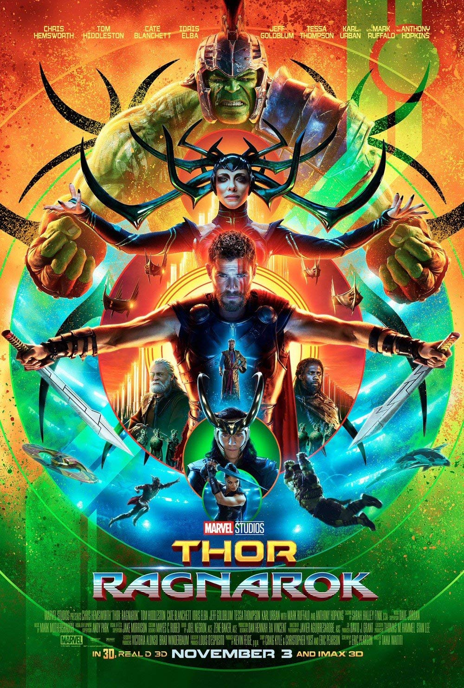
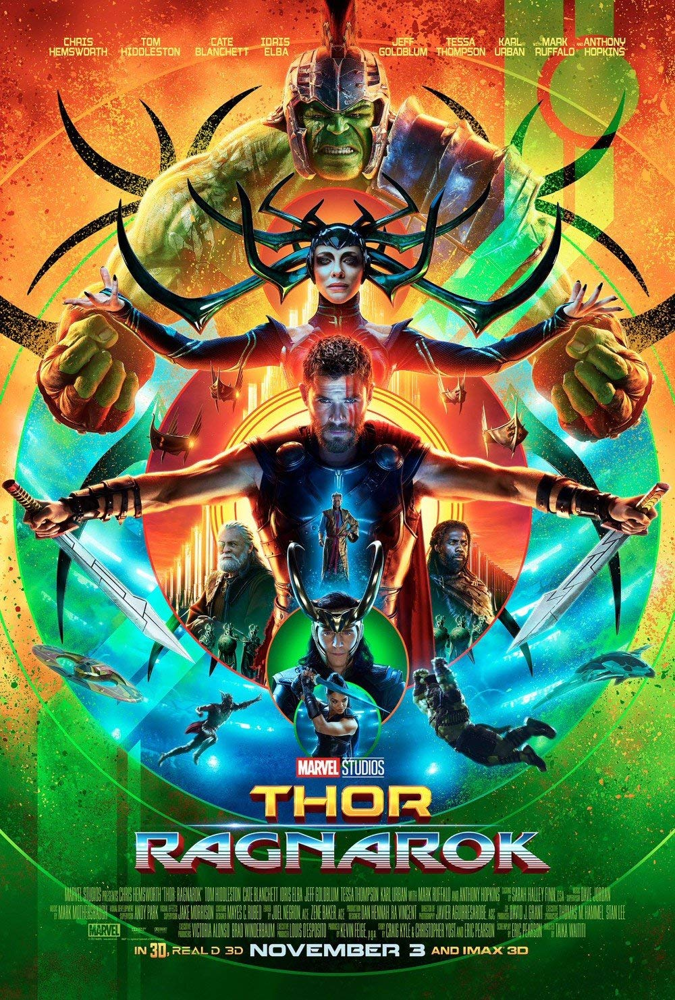

| Nº |
Nome do Filme |
Data de Lançamento |
Rendimento em Bilheterias |
| 1º |
Vingadores: Guerra Infinita |
2018 |
US$ 2.460,0 bilhões |
| 2º |
Os Vingadores |
2012 |
US$ 1.518,8 bilhão |
| 3º |
Vingadores: Era de Ultron |
2015 |
US$ 1.405,4 bilhão |
| 4º |
Pantera Negra |
2018 |
US$ 1.331,2 bilhão |
| 5º |
Homem de Ferro 3 |
2013 |
US$ 1.214,8 bilhão |
| 6º |
Capitão América: Guerra Civil |
2016 |
US$ 1.153,3 bilhão |
| 7º |
Homem Aranha: De Volta ao Lar |
2017 |
US$880.2 milhões |
| 8º |
Guardiões da Galáxia: Vol.2 |
2017 |
US$863.8 milhões |
| 9º |
Thor: Ragnarok |
2017 |
US$854 milhões |
| 10º |
Guardiões da Galáxia |
2014 |
US$773.3 milhões |
 
